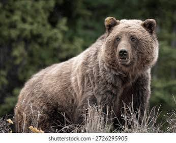
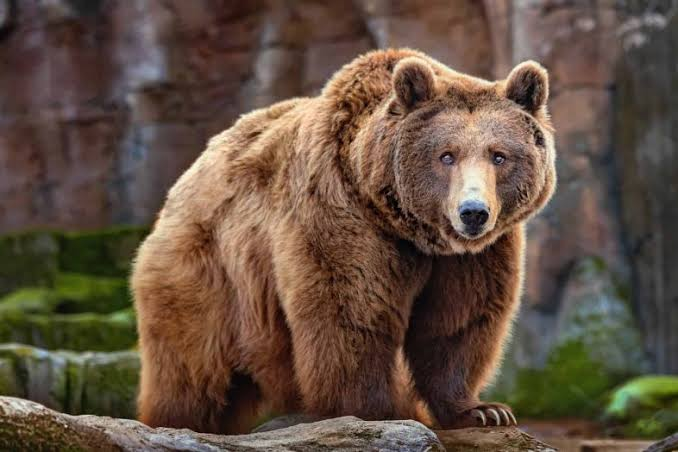
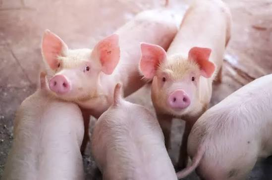
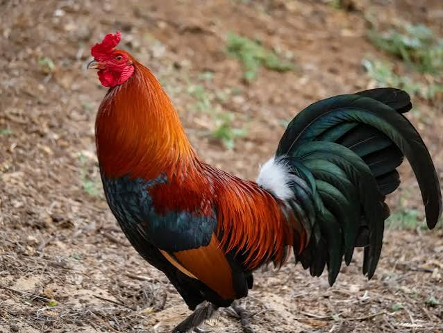
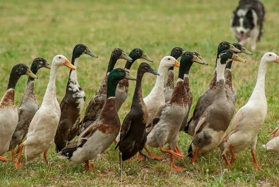
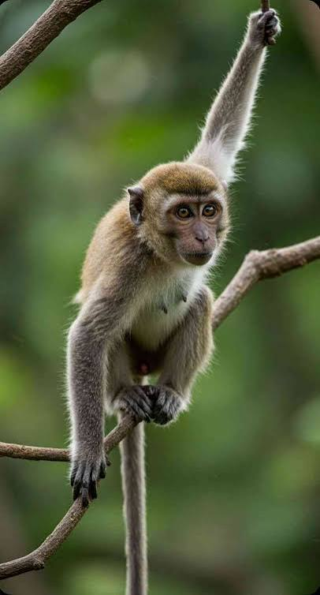
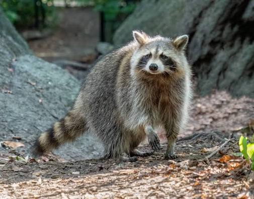
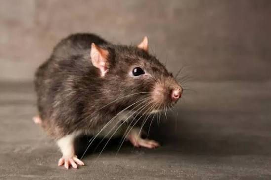
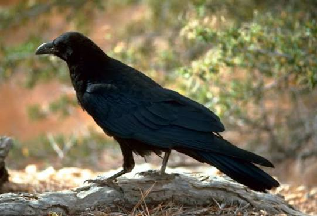

Explore • Learn • Protect
Mengenal hewan pemakan tumbuhan dan daging yang memiliki pola makan beragam dalam kehidupan sehari-hari.
Jelajahi Sekarang
Omnivora adalah kelompok hewan yang memakan tumbuhan sekaligus hewan lain. Mereka memiliki pola makan yang beragam sesuai dengan lingkungan dan ketersediaan makanan.
Hewan omnivora dapat membantu menjaga keseimbangan ekosistem karena berperan dalam rantai makanan serta penyebaran biji tumbuhan.
Beberapa karakteristik umum yang dimiliki hewan pemakan segala.
Memakan tumbuhan, buah-buahan, serta hewan lain.
Memiliki susunan gigi yang membantu mengolah berbagai jenis makanan.
Dapat menyesuaikan pilihan makanan dengan lingkungan sekitarnya.
Berikut beberapa hewan yang termasuk kelompok omnivora.

Memakan buah, tumbuhan, ikan, dan berbagai hewan kecil.

Memakan akar, buah, biji-bijian, dan hewan kecil.

Memakan biji-bijian, rumput, serangga, dan cacing.

Memakan tumbuhan air, biji-bijian, serangga, dan hewan air kecil.

Memakan buah, daun, serangga, dan hewan kecil.

Memakan buah, kacang-kacangan, serangga, dan ikan.

Memakan biji-bijian, buah, dan berbagai sumber makanan lainnya.

Memakan buah, biji-bijian, serangga, dan hewan kecil.